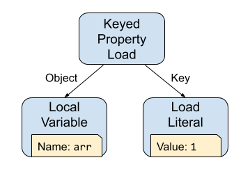
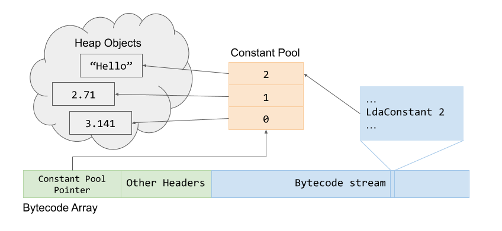

Ignition设计文档
原文链接
V8具有一个称为“Ignition”的解释器。Ignition是使用TurboFan的后端编写的基于寄存器的快速底层解释器。
V8的 full-codegen 编译器生成的机器码太啰嗦，因此对于经典页面的堆内存使用量会大大增加（先前的分析显示代码空间大约占用15～20%的JS堆空间）
除了造成内存浪费， 这还意味着V8尝试尽力避免生成它认为不会执行的代码。它实现懒解析和编译，函数通常只在首次执行时编译。这在页面启动有着大量的开销，因为延迟编译需要函数源码重解析。（例如： crbug.com/593477）
Ignition 项目的目标是去构建一个V8的解释器，它执行低级字节码， 因此能使一次运行或者非热代码以字节码的形式更紧凑的保存。由于字节码更小， 编译时间更少，我们也能更渴望初始化编译，大大改善启动时间。 另一个优点是字节码能直接传输给Turbofan图生成器，从而避免TurboFan在优化函数时需要重新解析源码。
Ignition项目的目标
减少代码空间约50%
对比full-codegen有合理的性能（在峰值性能基准中要慢约2倍例如Octane，在真实世界的网页中要慢的多）
注意：由于Crankshaft和TurboFan对热代码的优化，总体的下降将大大减少，希望可以忽略不计。
全面支持DevTools调试和cpu分析
替换full-codegen的第一层编译
在Crankshaft被删除之前，我们不能完全替换full-codegen，由于Crankshaft不能去优化到Ignition，因此它需要依赖full-codegen
一个新的Turbofan编译器的前端，能在不重解析JS源码的情况下优化重编译
支持从TurboFan去优化到解释器
这个项目中清楚的非目标（至少在当前阶段）：
支持不允许JIT代码的平台(如： iOS)
ICs和代码剩余部分仍然需要JIT代码生成
支持非JavaScript代码的执行，如 wasm
和full-codegen编译器等效性能
完成替换full-codegen编译器
如上所述， 我们需要full-codegen作为Crankshaft去优化的目标， 也需要去构建一些Ignition不能提供的Crankshaft的类型反馈。因此，full-codegen将成为一个热代码的中间层，它最终将被Crankshaft优化（解析器决定应该被TurboFan优化的函数将不会被full-codegen编译，而是直接有TurboFan优化）
总体设计
这一节概述了Ignition字节码解释器的总体设计，下面几节提供了更多的细节信息
解释器自身由一个字节码处理器代码片段的集合组成， 每一个处理器处理一个特定的字节码，然后派发给下一个字节码。这些字节码处理器用高级的，与机器架构无关的的汇编代码编写，被CodeStubAssembler类实现并由TurboFan编译。
因此，解释器能被写一次，使用TurboFan去为每一个支持V8的架构生成机器指令。当解释器开启时，每一个V8的实例包含一个全局的解释器表，包含一个指向每一个字节码处理器的对象指针，通过字节码的值索引。这些字节码处理器也能包含在启动快照中，并在新的实例创建时时反序列化。
为了让解释器去运行，函数在初始编译步骤被BytecodeGenerator转换成字节码。BytecodeGenerator是一个AstVisitor, 它遍历函数的AST为每一个AST节点发送合适的字节码。这个字节码被函数作为一个SharedFunctionInfo对象上的字段关联， 并且这个函数代码的入口地址被设置到内建InterpreterEntryTrampoline的末尾。
当函数在运行时被调用时， 从InterpreterEntryTrampoline的末尾输入。它尾部设置了合适的栈帧， 然后派发函数的第一个字节码给解释器的字节码处理器来开始执行这个函数。每一个字节码处理器的末尾通过在全局表中基于字节码的索引直接派发下一个处理器。
Ignition解释器时一个基于寄存器的解释器。这些寄存器不是传统的机器寄存器， 而是寄存器文件中的插槽，这些文件作为被分配给函数堆栈的一部分。字节码能通过紧随字节码的BytecodeArray流参数操作具体的输入和输出寄存器。
为了减少字节码流的参数， Ignition有一个累加寄存器， 它被许多字节码用作隐式的输入和输出寄存器。 这个寄存器不是堆栈上寄存器文件的一部分，而是通过Ignition在机器寄存器中维护。他可以最小化加载和存储重复的寄存器对内存的操作。它通过避免为许多操作制定输入和输出寄存器来减少字节码的尺寸。例如：二元操作字节码仅仅需要一个单一的操作去指定输入中的一个，其他的输入和输出寄存器是隐式累加寄存器，而不必显式的指明所有三个寄存器。
字节码处理器的产生
字节码处理器被TurboFan编译器生成。每一个处理器都有它自己的代码对象并且是独立生成的。这些处理器通过InterpreterAssembler编写为TurboFan的操作图，InterpreterAssembler是CodeStubAssembler的子类带有解释器所需要的一些额外的高层原语，例如： Dispatch， GetBytecodeOperand等。下面是一个为Ladr(Load Accumulator from Register)字节码处理器生成函数的示例：
1 | void Interpreter::DoLdar(InterpreterAssembler* assembler) { |
字节码处理器不被直接调用，而是每一个字节码处理器派发下一个字节码。字节码分派被实现为TurboFan的尾调用操作。这个解释器加载下一个字节码，通过派发表索引获取目标字节码处理器的代码对象， 然后尾调用这个代码对象调度下一个字节码操作。
解释器也需要在固定机器寄存器中垮字节码处理器时维护状态。 例如一个指向BytecodeArray的指针，当前的字节码的偏移量和解释器的累加器的值。这些值由TurboFan作为参数，它从前一个字节码分派出接受参数，然后传递给下一个字节码处理器作为这个字节码的尾调用。字节码处理器通常为这些参数指定固定的及其寄存器并分派调用， 这允许它们通过解释器分派线程化而不需要在栈上push/pop。
字节码处理器图生成后， 将被传递给一个TurboFan链路的简化版本， 并且分配到解释器表的相应入口。
生成字节码
为了编译函数到字节码， js代码将被解析生成AST。BytecodeGenerator遍历AST然后为每一个AST节点生成合适的字节码
例如， js片段 “ arr[1] ” 将被转换为下面的AST树

BytecodeGenerator将遍历这棵树， 首先访问KeyedPropertyLoad节点， 它将首先访问Object边(左子节点)生成代码，代码评估应该加载哪个键控属性。 在这种情况下，这个对象是一个局部变量， 它已经被分配到解释器的寄存器（例如， r3）， 因此代码被生成到加载这个寄存器到累加器（Ldar r3），并且控制权返回到KeyedPropertyLoad节点。这个访问器分配一个临时的寄存器（如 r6）保存这个对象， 然后生成代码来保存累加器到寄存器（Star r6）。Key边(右子节点)现在访问到生成的代码提供一个加载属性的key。在这种情况下这个节点是一个整数字面量1， 因此输出一个 LdaSmi #1 字节码去加载 1 到累加器中。最终输出一个键控属性加载代码， 结果是一个字节码片段：
由于对象已经存在于寄存器中，这中进出寄存器的操作是多余的， 因此我们有寄存器别名优化来避免它。
1 | Ldar r3 |
- PS : 翻译时生成的字节码已发生变化(2020-09-06)
1 | LdaGlobal [0], [0] |
BytecodeGenerator使用一个BytecodeArrayBuilder为解释器生成格式良好的字节码数组。BytecodeArrayBuilder在原始字节码被发送时提供灵活性。例如， 我们有多个字节码执行相同的语义操作， 但有些具有更宽的操作数（例如 16位或者32位）。BytecodeGenerator不需要知道这些，只是要求BytecodeArrayBuilder输出一个一组带有操作数的集合， 然后BytecodeArrayBuilder选择合适的操作数宽度。
生成的字节码存储在SharedFunctionInfo的一个字段上。该字节码不仅可以被解释器执行，而且具有足够的代表性能生成TurboFan的编译图，而不必重新生成函数AST。这可以避免当前在重新编译前需要重新解析函数源码的需求。
解释器寄存器分配
在字节码生成期间，BytecodeGenerator在寄存器文件为局部变量，上下文对象指针（用来维护闭包函数的状态），和执行表达式需要的临时值（表达式堆栈）分配寄存器。在执行期间， 寄存器文件空间在函数的开始作为函数栈帧的一部分被分配。 字节码在这些寄存器上依靠指定寄存器索引作为一个操作数进行操作， 解释器用来从与此关联的特定堆栈中加载或存储。
由于寄存器索引直接映射到函数的堆栈空间， 解释器也能作为寄存器直接访问栈上的其他空间。例如， 在开场被pusdao 堆栈的函数上下文和函数闭包指针能被任何有寄存器操作的字节码当作Register::current_context()和Register::function_context() 直接访问。类似的，参数被传递给函数（包括隐式的this参数）也能被寄存器访问。
The figure below shows an example stack frame for a function and the mapping of registers indexes and their raw operand values, to stack slots:
下图显示一个一个函数、寄存器索引映射和他们原始操作值在栈上的示例

原始寄存器操作值（相反的顺序，由于栈在内存中向下增长）
由于寄存器文件特性，Ignition在表达式评估期间不能像full-codegen那样动态push和pop值到栈（唯一的例外是调用的参数， 然而这是在分离的内建函数完成，而不是在解释器中完成的）。这样的好处是栈能在函数开场时分配一次并且可以和特定的架构要求（例如，ARM64的16字节对齐的要求）保持一致。然而， 它意味着BytecodeGenerator需要在代码生成期间计算堆栈的最大尺寸。
解析器将函数的局部变量在语意上提升到函数的顶部。因此，可以在开头知道局部变量的数量，并且在初始化遍历AST的步骤为每一个局部变量分配一个寄存器文件索引。解析器还提前知道内联上下文额外的寄存器数量，因此可以被BytecodeGenerator在初始化AST遍历期间阶段预分配。
在表达式评估期间需要使用临时变量，其中可能是一个或多个活动的寄存器保存表达式树的中间值直到他们被消耗。BytecodeGenerator 使用一个限定范围的BytecodeRegisterAllocator分配寄存器。在每一个语句中为这个语句创建一个新的作用域分配器， 它被内联表达式节点用来分配临时的寄存器。这些临时变量仅在这个语句的生存期内有效， 因此当BytecodeGenerator完成对这个语句的访问后这个分配器将移除作用域，并且释放所有被它分配的临时寄存器。BytecodeGenerator记录整个函数代码生成中被分配的临时寄存器的最大数量， 并且在寄存器文件中为最大需求的临时变量数量分配足够的额外空间。
寄存器文件的布局将由临时变量跟踪的局部变量决定，局部变量和临时变量之间美欧重叠以保持访问的简单。一旦发射器完成对寄存器文件大小的计算， 它将使用它去计算函数需要的帧大小， 并且将在BytecodeArray对象中保存这个值。
在进入这个函数时，解释器开场将为栈上的寄存器文件增加栈指针数量需求到分配的空间。所有的寄存器文件将初始化为指向undefined_value的指针（像被full-codegen push到局部变量）。解释器将仅仅将标记的指针储存在寄存器文件的入口，因此GC能遍历栈上的寄存器文件访问所有的标记指针的条目。
上下文链
解释器追踪堆栈（它是函数固定帧的一部分， 可以通过Register::current_context()访问字节码）中的上下文对象。当分配一个新的上下文时，BytecodeGenerator分配一个ContextScope对象去跟踪嵌套的上下文链。它允许BytecodeGenerator解开嵌套的上下文链操作，从而使解释器可以直接访问内部上下文扩展分配的任何变量，而不是遍历上下文链。
当一个ContextScope对象被分配时，一个ContextPush字节码被发送。这个字节码移动当前的上下文对象到一个被BytecodeGenerator分配的寄存器， 并且push一个新的上下文到当前的上下文寄存器。当一个操作是查看一个变量时，它被分配一个局部的上下文， BytecodeGenerator找到关联的ContextScope， 并检查哪个是当前分配的上下文寄存器，然后直接通过这个寄存器从正确分配的上下文对象中加载这个变量， 而不是遍历上下文链来找到正确的上下文。当ContextScope超出作用域范围时，一个ContextPop字节码被发出， 它恢复父级上下文到当前的上下文寄存器。
通过维护当前的上下文当作一个明确的寄存器，而不是仅仅依赖BytecodeGenerator去跟踪哪个寄存器持有当前的上下文对象，使得解释器能在需要当前上下文时执行操作（例如，传递上下文到JS函数调用或者运行内建操作）， 而不必获取额外的操作来指定哪个寄存器持有当前的上下文。
常量池记录
常量池用来存储堆对象和小整数，它能在生成的字节码中被引用为常量。每一个BytecodeArray有它自己的常量池嵌入在BytecodeArray对象中。常量池是一个指向堆对象的FixedArray指针。字节码通过在FixedArray中的每一个常量的索引来引用到常量池中的额索引。对于字节码获取常量池条目作为输入的操作，索引将以一个立即无符号数被发出。

字符串和堆数字一直存储在常量池中，并且被指针引用。 小整数和强引用奇数类型字节码能直接加载它们，而不会进入常量池。常量池也能柏村前向跳转偏移， 下面将讨论它。
常量池在字节码生成期间被创建，有一个ConstantArrayBuilder类来表示它。当字节码需要引用一个常量时，比如示例加载一个字符串， 它传递这个对象给常量池构建器并询问这个对象的一个常量池引用。ConstantArrayBuilder检查如果这个对象已经存在于数组中， 如果存在则返回已存在的引用， 否则它把这个对象增加到正在构建的常量池的末尾，然后染灰这个对象的索引。在字节码生成后，ConstantArrayBuilder发送一个带有必要对象指针的固定数组。
目前为止，逻辑描述相对简单。复杂性来自于常量池保存转发跳转便宜的使用。这个前向跳转的问题是， 在跳转代码被发送的时候不知道跳转的位置，因此在字节码流中预留一个跳转位置便宜的空间。BytecodeArrayBuilder保持追踪这个位置然后当知道跳转位置的时候补上。
在简化的情况下，字节码生成器发送一个的前向跳转，但在流中将立即操作数字节留空。当位置知道后， 这个空白被补上。如果位置适合一个字节的操作数就直接写入位置，如果位置超过一个字节， 就把位置放入常量池中然后更新跳转字节码和操作数。跳转字节码被更新为跳转一个常量池操作数，然后这个操作数被更新到常量池的条目中。
在实践中，常量池随着代码生成而增长，并且对大小没有严格限制。当代码发送时， BytecodeArrayBuilder需要知道发送什么类型的跳转字节码： 一个跳转指令获取一个字节的操作数，或者两个字节的操作数或者4个字节的操作数。 因此ConstantArrayBuilder类支持预留常量池条目。这个预留位保证了具体大小的引用在未来是可用的， 即使改索引的当前值是未知的。当BytecodeArrayBuilder发送一个前向跳转指令时创建一个预留位，并且发送一个操作数大小的字节码， 这个字节码匹配ConstantArrayBuilder中的预留位模式。当跳转被补齐时，如果位置适合相同大小的立即操作数，预留位被取消， 否则常量池预留位被提交到跳转位置，并且跳转字节码和操作数被更新到使用跳转到常量池中的位置。
局部控制流
Javascript通常有语言级别的原始命令试控制流， 如if语句， if…else语句，for循环， while循环，do 循环和switch语句。它也有一这个语言特别的结构 for…in用来迭代对象的属性以及打破命名块。这些控制流结构仅仅影响函数编译到字节码的执行。
BytecodeGenerator从Javascript的流控制语句形式的AST转换为生成相应的字节码的控制流构建类实例。字节码层级中的控制流实现为一个有条件和无条件跳转的集合。支持for..in需要附加的字节码，用来获取被迭代对象的信息并可以前进到集合中的元素。
为了促进控制流结构的构建，BytecodeArrayBuilder支持允许指定偏移量的标签概念。当一个标签的位置已知时， BytecodeGenerator通过调用BytecodeArrayBuilder::Bind()绑定这个标签到当前的位置。当生成跳转代码时，BytecodeGenerator能在他被绑定之前引用到一个标签。BytecodeArrayBuilder在BytecodeArray被发送之前检查字节码中所有的标签引用是否被绑定。因为Bind函数调用绑定一个标签到要生成的字节码数组的末尾，标签一直被限制在字节码数组的目标偏移量上。被发送的跳转的目标偏移代表一个立即操作数或常量池中的值。它们不支持跳转到动态计算的值， 例如实例跳转到寄存器中的偏移。
下面是一个if…else语句生成的控制流

if…else是被生成器发出的最简单的控制流结构。对于更复杂的控制流结构像循环和中断块，BytecodeGenerator 采用控制流构建器和控制作用域。
所有的循环使用相同的控制流构建器实例LoopBuilder。LoopBuilder有一组用户循环条件，循环头，继续/下一步， 结束的标签集合。循环语句的访问建立循环头，循环田间和结束循环的标签位置。它通过调用BytecodeGenerator::VisitIterationBody访问迭代器主体的语句。改访问器主体实例化ControlScopeForIteration并且push它到BytecodeGenerator的堆栈中，然后访问循环体的语句。如果遇到一个break或continue语句， 这些语句的访问器将窥探当前的ControlScopeForIteration并且发出一个break（或continue）信号。然后控制作用域在其关联的LoopBuilder上调用合适的方法， 这个方法给标签发送合适的跳转跳转。
ControlFlowBuilder类确保发送的字节码和源码有相同的控制流顺序。它的自然顺序意味着唯一向后的分支是发送返回到循环的开头的循环语句字节码。这个顺序意味着当字节码进入TurboFan编译器图时没有附加的循环分析需要被转换。这个分支对构建图的分析仅仅需要标识跳转的位置及目标。
异常处理
TODO
解释器执行代码
Ignition解释器是基于寄存器的，间接的线程解释器。其他JavaScript代码到解释器的入口点是内建的InterpreterEntryTrampoline。这个内建的stub设置了合适的堆栈， 在分派第一个调用函数的字节码之前加载预留的带有合适值的寄存器（如：字节码指针，解释器分派表指针）。
堆栈布局和预留机器寄存器
下面是一个解释器堆栈的布局的示例

解释器栈帧被内建的InterpreterEntryTrampoline创建， 它push固定的帧值(Caller PC, Frame Pointer, JSFunction, Context, Bytecode Array 和 Bytecode Offset)然后为寄存器文件在栈上分配空间（BytecodeArray包含一个入口，它告诉这个函数需要多大的内建帧空间）。然后它将寄存器文件的所有值写成undefined， 确保GC在遍历堆栈时不会看到任何不可用的指针。
InterpreterEntryTrampoline内建stub初始化一些固定的被解释器使用的机器寄存器，并命名：
kInterpreterAccumulatorRegister 存储隐式的累加寄存器
kInterpreterBytecodeArrayRegister： 指向解释器要开始的BytecodeArray对象
- kInterpreterBytecodeOffsetRegister：在BytecodeArray中执行当前偏移(本质是PC字节码)
- kInterpreterDispatchTableRegister: 指向解释器分派表的指针，被用来分派下一个字节码处理器
- kInterpreterRegisterFileRegister: 指向寄存器文件开始的指针（将很快被删除，因为现在TurboFan能直接使用父帧指针）
- kContextRegister： 指向当前上下文对象的指针（将很快被删除， 所有的访问将痛殴解释器寄存器的Register::current_context()）
它然后对字节码流中的第一个字节码调用字节码处理器。上面初始化的寄存器可以作为TurboFan的参数节点提供给字节码处理器， 因为实际上调用对字节码分派指定的关联参数约定了每一个固定的及其寄存器。
如果字节码处理器是简单的，不调用任何函数（除了分派操作中的尾调用），TurboFan可以消除为这个字节码处理器创建的堆栈。然而，在更多的字节码处理器中，当执行进入字节码中时，TurboFan将构建一个新的STUB帧。除了需要的固定帧，这个帧仅保存由TurboFan溢出的机器寄存器的值（例如：调用过程中调用者保存的寄存器）。所有的状态关联到存在于父帧中的解释器函数。
访问解释器寄存器
如上所述，在字节码生成期间，堆栈中所有的局部变量和临时变量将被分配到函数寄存器文件中指定的寄存器。这些变量以及函数的参数可以通过字节码处理器当作解释器寄存器访问。字节码处理器应该操作的字节码被指定为流中字节码的操作数。解释器从字节码流中获取它应该操作的寄存器索引。这个索引是一个从寄存器文件起始位置开始的基于双字节的偏移量，它可以是正数（去访问位于寄存器文件上方的堆栈， 例如函数参数）或者负数（去访问函数自身在寄存器文件中分配的局部变量）。解释器通过扫描操作数的索引到字节的偏移来访问一个给定的寄存器， 然后从kInterpreterRegisterFileRegister+offset的内存位置加载 或保存到这个内存的位置。
宽字符操作
为Ignition生成字节码最小尺寸是主要动机， 因此字节码格式是表格来支持操作不同宽度的操作数。Ignition使用特别的字节码前缀来支持宽操作数。Ignition支持固定宽度的类型和可伸缩宽度的操作数。可伸缩宽度的操作数和前缀字节码的尺寸成比例增加。
定宽操作数用于运行时调用标识符（16位）和标志操作数（8位）。寄存器操作数， 立即操作数， 索引操作数和寄存器计数操作数是8位的基本尺寸，并且可扩展为32位。

加载累加器时前缀字节码的影响
Wide前缀字节码可以使操作数扩展两杯到16位， ExtraWide前缀字节码将扩展到4被到32位。
为了支持带前缀的分派，字节码分派表具有可伸缩操作数偏移的条目, 每次缩放偏移256位， 因此0-255之间的索引符合未缩放的字节码，255-511代表Wide前缀的字节码， 512-767代表带有ExtraWide前缀的字节码。
早期的Ignition设计将宽字符放在相同的8位字节码中，它限制了被用于其他目的的空闲字节码的数量， 例如专用的字节码。这个设计还具有用于访问wide寄存器操作的详细寄存器转换方案，因为获取所有字节码的可缩放版本是不可行的。使用前缀字节码更清晰，并且当使用时仅仅有一个字节的开销， 在Octane-2.1 的基准测试中消耗小于1%。
JS调用
调用其他JS函数被调用的字节码处理。BytecodeGenerator确保被传递给这次调用的参数在连续的寄存器中。然后发送带有寄存器指定调用操作数的字节码， 第一个参数是调用者，第二个寄存器操作数是指定被传递给调用函数参数起始位置的寄存器，第三个操作数是指定的参数的数量。
解释器调用字节码处理器用当前的字节码偏移更新在解释器帧上字节码偏移位置。 这允许栈遍历堆栈代码为栈帧上的字节码计算字节码PC。然后调用内建的InterpreterPushArgsAndCall，传递被调用者，第一个参数寄存器的内存位置和参数的数量。内建的InterpreterPushArgsAndCall然后从
当解释器函数被返回，解释器尾调用内建的InterpreterExitTrampoline stub， 它将展开堆栈并恢复控制权到调用的函数， 返回累计器中保留的值。
属性加载/保存
字节码通过内联缓存（ICs）加载或保存JS对象的属性。字节码处理器和JIT代码（例如： full-codegen）一样调用相同的LoadIC和StoreIC代码。由于加载/保存不再补齐代码（直接在TypeFeedbackVector上操作），这意味着相同的ICs可以被JIT和Ignition同时使用。
字节码处理器传递函数的TypeFeedbackVector属性以及与操作AST节点相关联的类型反馈到合适的IC stub。IC stub现在可以和full-codegen编译器一样的方式更新TypeFeedbackVector中的条目，能从类型反馈中学习， 以提供后续的编译优化。
二元操作
对于BinaryOps和UnaryOps（例如：ToBoolean），full-codegen目前使用ICs补齐机器码。我们不能在Ignition中使用ICs，因为他们会修补字节码（它不是一个特别的函数调用）。因此我们目前不收集有段Binary和Unary操作的类型反馈。
目前，大部分Binary和Unary操作调用给定的运行时函数。我们正在将这些调用替换为用CodeStubAssembler编写的stub调用，这些调用以内联的方式展示通用的情况，仅在复杂的清康下调用运行时函数。目前我们调用这些stub, 然而由于他们使用CodeStubAssembler编写， 我们将能更容易地直接将代码内联到解释器的字节码处理器。
在未来的优化中， 我们能使用实际字节码的反向修补来指向给定操作的特别字节码处理器（例如：内联SmiAdd作为一个特别的字节码）， 然而它由我们在Ignition中对BinaryOps和UnaryOps收集的类型决定。
TurboFan字节码图构建器
BytecodeArray通过BytecodeGenerator构建， 包含所有需要喂给TurboFan和TurboFan构建图的必要信息。它是BytecodeGraphBuilder实现的。
BytecodeGraphBuilder首先遍历字节码去执行一些基本的分支分析，这个分析将查找前向和后向分支的目标代码。当构建TurboFan图时这被用来在BytecodeGraphBuilder中设置合适的循环头环境。
BytecodeGraphBuilder然后再次遍历BytecodeArray， 访问每一个字节码，然后调用一个字节码指定的每一个访问器。字节码访问器函数从BytecodeArray读取字节码操作， 然后加到TurboFan图中以执行这个字节码的操作。许多字节码能直接映射到TurboFan中已经存在的JSOperator上。
BytecodeGraphBuilder维护一个环境，这个环境追踪哪些节点代表的值存储在BytecodeArray的寄存器文件的寄存器中（包括累加寄存器）。这个环境也追踪当前的上下文对象（它被Push/PopContext字节码更新）。当访问器访问一个字节码是，它从寄存器读取一个值， 查看这个节点在环境中关联的那个寄存器， 然后使用这个寄存器作为输入节点输入给JSOperator节点开始构建当前的字节码。 相似的， 对于输出一个值到寄存器或累计器的操作， 当它完成时访问器将使用新的节点更新环境中的寄存器。
去优化
Javascript操作能在执行期间触发去优化，从优化的代码块返回到未优化的的字节码。为了支持去优化操作， BytecodeGraphBuilder需要保持跟踪解释器堆栈的状态，因此它能在去优化时重新构建解释器的堆栈，然后在去优化的点重新进入函数。
环境也跟踪this，依靠在执行中的每个点对每个寄存器相关联的节点保持跟踪。BytecodeGraphBuilder在一个JSOperator的FrameState节点检查this信息，这个节点触发去优化操作（或者期望 - 在这个节点执行之前基于状态检查，或赖执行 -在这个节点已经被执行之后）。
由于每一个字节码映射一个单一的JSOperator节点，这意味着我们能仅仅一个字节码之前或之后去优化。因此，我们在去优化的点使用字节码偏移作为BailoutId。当TurboFan生成字节码去处理潜在的去优化操作， 它序列化一个TranslatedState记录，记录描述了如何为去优化的点重新构建一个解释器帧。这是基于去优化点的FrameState节点。当这个去优化的点触发时，解释器帧被使用TranslatedState记录重新构建， 然后运行时使用内建的InterpreterNotifyDeoptimized在合适的字节码偏移处重新进入解释器。
支持调试
为了让解释器开启代码的调试断点，调试器将复制函数对象的 BytecodeArray对象， 然后用一个特殊的DebugBreak字节码替换断点位置的任何字节码。因为所有的字节码至少一个字节，所以无需在字节码流中分配额外的字节赖确保可以设置断点。每种尺寸的字节码都有DebugBreak字节码的变种用来确保BytecodeArray仍然能被正确的迭代。还有DebugBreakWide和DebugBreakExtraWide字节码，可以作为断点也可以作为下一个字节码的前缀Wide和ExtraWide的变体（与Wide和ExtraWide的非断点字节码相同）。
一旦一个断点被触发，解释器调用进入调试模式。调试模式能通过查找函数的真实BytecodeArray然后分派实际的字节码替换DebugBreak字节码而继续执行
更多详细的可用文档在 Debugging support for Ignition
源码位置
源码位置被字节码生成器随字节码一起发送。有两种源码位置类型：语句位置和表达式位置。语句位置被调试器用来在步骤之间跳转。语句位置出现在调试器能分派与它关联的字节码之前的可移动的位置。表达式语句被用来当表达式异常时提供堆栈跟踪信息。当出现异常时，调试器从异常位置反向扫描寻找表达式位置并用于堆栈的追踪中。

源码和字节码中的源码位置
字节码生成过程需要为调试器和异常报告正确工作维护源码位置。在字节码生成过程的任何优化需要确保源码位置有相同的因果顺序。有些异常位置能被省略，因为他们与不会产生异常的或者是重复的字节码相关联。
探查器支持
TODO
后续工作
TODO - describe possible specialized bytecode patching optimizations.
TODO - describe possible super-bytecodes.
TODO - describe type feedback for binary ops.
Appendix A: Table of Bytecodes
Appendix B: Reading Material
Threaded Code, in Wikipedia entry, https://en.wikipedia.org/wiki/Threaded_code
Revolutionizing Embedded Software, Kasper Verdich Lund and Jakob Roland Andersen, in Master’s Thesis at University of Aarhus, http://verdich.dk/kasper/RES.pdf.
Inside JavaScriptCore’s Low-Level Interpreter, Andy Wingo’s blog, https://wingolog.org/archives/2012/06/27/inside-javascriptcores-low-level-interpreter
SquirrelFish, David Manelin’s blog, https://blog.mozilla.org/dmandelin/2008/06/03/squirrelfish/
Context Threading, Marc Berndl, Benjamin Vitale, Mathew Zaleski, and Angela Demke Brown, in CGO ’05: Proceedings of the international symposium on Code generation and optimization, http://www.cs.toronto.edu/syslab/pubs/demkea_context.pdf (also Mathew Zeleski’s thesis http://www.cs.toronto.edu/~matz/dissertation/)
Optimizing Indirect Branch Prediction Accuracy in Virtual Machine Interpreters, M. Anton Ertl and David Gregg, in PLDI’03, http://www.eecg.toronto.edu/~steffan/carg/readings/optimizing-indirect-branch-prediction.pdf
The Case for Virtual Register Machines, Brian Davis, Andrew Beatty, Kevin Casey, David Gregg, and John Waldron, in Interpreters, Virtual Machines, and Emulators (IVME’03), http://dl.acm.org/citation.cfm?id=858575
Virtual Machine Showdown: Stack vs Registers, Yuhne Shi, David Gregg, Andrew Beatty, and M. Anton Ertl, in VEE’05. https://www.usenix.org/legacy/events/vee05/full_papers/p153-yunhe.pdf
vmgen - A Generator of Efficient Virtual Machine Interpreters, M. Anton Ertl, David Gregg, Andreas Krall, and Bernd Paysan, in Software: Practice and Experience, 2002. http://citeseerx.ist.psu.edu/viewdoc/download?doi=10.1.1.16.7676&rep=rep1&type=pdf
The Self Bibliography, https://www.cs.ucsb.edu/~urs/oocsb/self/papers/papers.html
Interpreter Implementation Choices, http://realityforge.org/code/virtual-machines/2011/05/19/interpreters.html
Optimizing an ANSI C Interpreter with Superoperators, Todd A. Proebstring, in POPL’95, http://dl.acm.org/citation.cfm?id=199526
Stack Caching for Interpreters, M Anton Ertl, in SIGPLAN ’95 Conference on Programming Language Design and Implementation, http://www.csc.uvic.ca/~csc485c/Papers/ertl94sc.pdf
Code sharing among states for stack-caching interpreter, Jinzhan Peng, Gansha Wu, Guei-Yuan Lueh, in Proceedings of the 2004 workshop on Interpreters, Virtual Machines, and Emulators, http://dl.acm.org/citation.cfm?id=1059584
Towards Superinstructions for Java Interpeters, K. Casey, D. Gregg, M. A. Ertl, and A. Nisbet, in
Proceedings of the 7th International Workshop on Software and Compilers for Embedded Systems, http://rd.springer.com/chapter/10.1007/978-3-540-39920-9_23
Branch Prediction and the Perfomance of Interpreters - Don’t Trust Folklore, Erven Rohou, Bharath Narasimha Swamy, Andre Seznec. International Symposium on Code Generation and Optimization, Feb 2015, Burlingame, United States. https://hal.inria.fr/hal-00911146/document